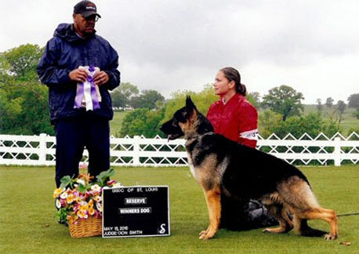
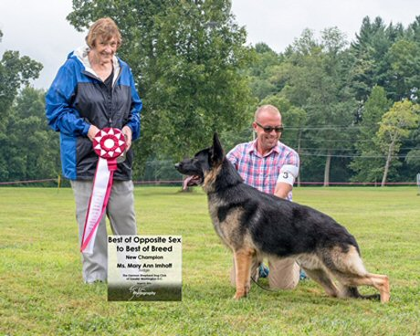

Stud Dogs

 |
| Ch
DeRousse's Ozark Mountain Daredevil TC OFA
H/E/THY/Cardiac/CHIC "Crockett" Stud Fee: $800 BC/VC required Frozen Semen Available Stud fee amount due at time of breeding/collection OWNER: Judy DeRousse EMAIL: judyderousse@gmail.com Ph: 314.368.0121 Click Here for Pedigree |
 |
| Ch
Shaden’s Rudy’s Dream OFA H/E "Rudy" DOB 5/4/2013 Proven stud dog Stud fee is $700 unless other terms are agreed upon. Frozen Semen Available. Will ship. Great temperament and health. OFA Hips and Elbows Large bones and masculine features Sire: U.S. Select #7 CH. Forest Knoll When It’s Right Hadori Dam U.S. CH Mastana’s Mariah The Partys ON OWNER: Glenn Murphy EMAIL: Murfamx4@att.net Ph: 314-603-3874 Click Here for Pedigree |